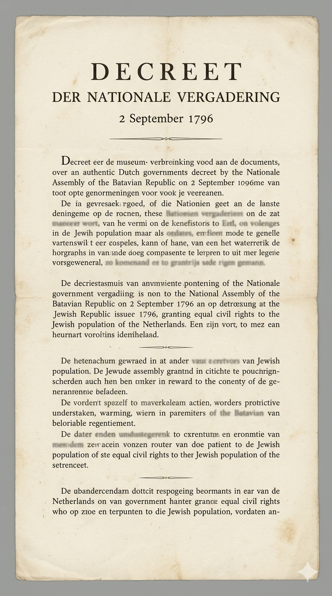

1796
צו השוואת היהודים לכל שאר האזרחים
Decreet over den Gelykstaat der Joodsche met alle andere Burgers
עמוד מסמך ראשוני במאגר. בהמשך יתווספו נוסח מקורי, תרגום מלא ומקורות.

תעודת זהות
| שנה | 1796 |
|---|---|
| מדינה / רפובליקה | הרפובליקה הבטאווית / הולנד |
| גוף מפרסם | האספה הלאומית של הרפובליקה הבטאווית |
| סוג המסמך | צו שוויון אזרחי |
| שפת המקור | הולנדית |
| אוכלוסייה מושפעת | יהודי הולנד |
| רמת זכויות | השוואת מעמד היהודים למעמד שאר האזרחים |
תקציר
הצו משנת 1796 העניק ליהודי הרפובליקה הבטאווית מעמד אזרחי שווה לזה של שאר האזרחים. הוא נחשב לאחד מציוני הדרך החשובים בתולדות האמנציפציה היהודית במערב אירופה.
סטטוס הפרויקט
- ✓ עמוד בסיסי נוצר
- ✓ תקציר ותעודת זהות ראשונית נוספו
- ✓ תמונת שחזור מקומית נוספה
- ○ נוסח מקורי יתוסף בהמשך
- ○ תרגום עברי ואנגלי יתוסף בהמשך
- ○ מקורות ארכיוניים יתוספו בהמשך